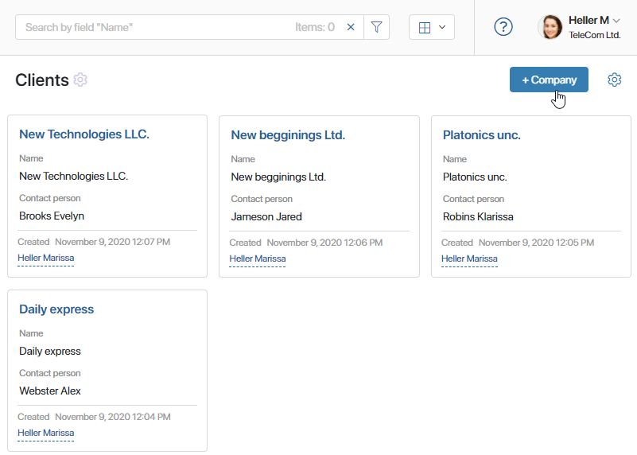
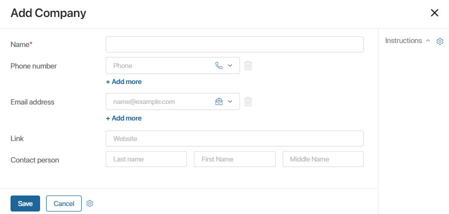
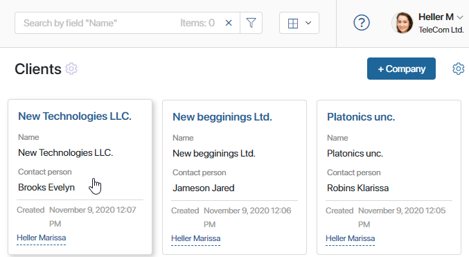
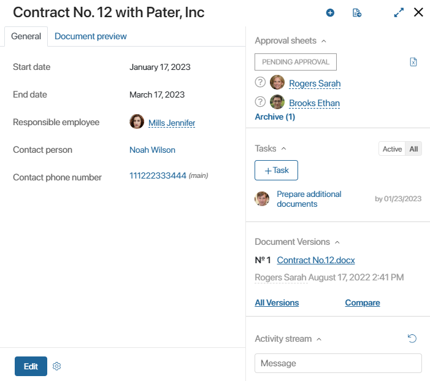
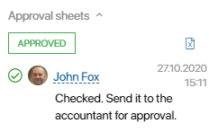
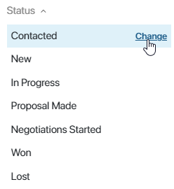
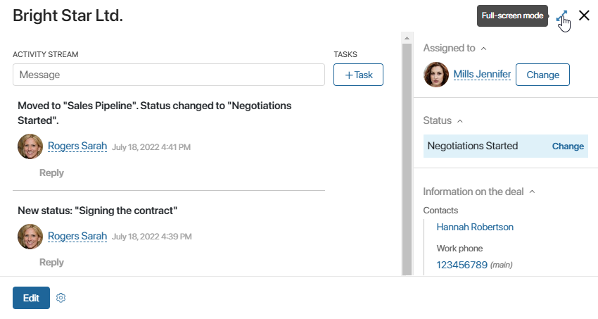
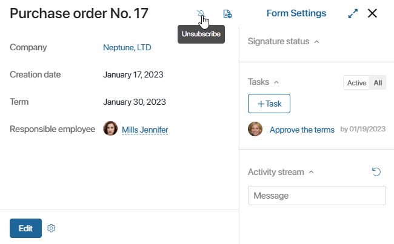
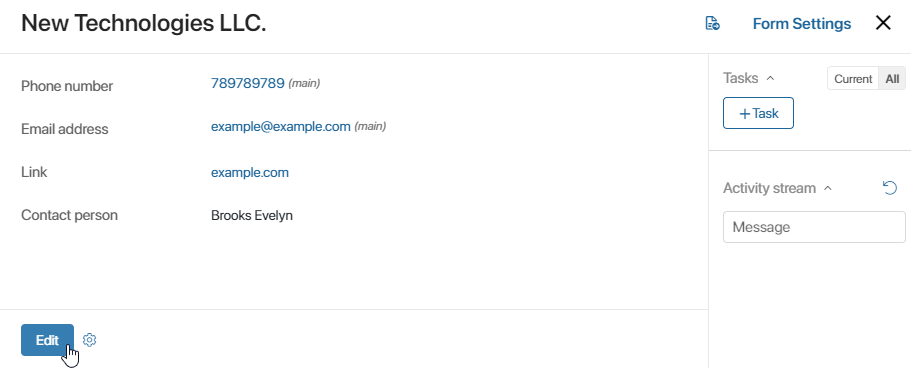

An app item is an entry on the app page that shows certain data. App items are created by users and store information that users enter.
For example, the Companies app is used to store data about specific legal entities, their addresses, phone numbers, etc. Each company added to the app will be its item.
The form of app item pages is configured when you add a new app or edit an existing one.
There are three types of app item forms:
- Create form. Opens when you click on the item creation button. To create an item, you need to fill out all the required fields marked with the asterisk
 ;.
;. - View form. Opens when you click an item on the app page, and displays all the data stored in the item. You can configure the forms to show fields dynamically;
- Edit form. Opens when you click on the Edit button on an app item’s page, and allows editing the values of the fields displayed on the view form.
By default, these three forms are identical. However, you can switch to the Advanced Mode to set up different forms for creating, viewing, and editing app items.
You can use access settings to specify which users can create, view, and edit app items in an app.
When you open an app item or a task, you can quickly close it by pressing Escape on your keyboard.
In addition, you can add buttons to app forms, as well as configure an automatic launch of a business process, for example, when you click the button to save a new item. Read more about it in the Manage buttons on app item pages article.
Create
There are two ways to create an app item:
- Open the page of an app. In the upper right corner, click +Item name.

On the creation form that opens, fill out the fields and click Save.

Learn more about configuring the Create form in the App item forms article.
- It is also possible to add a new app item in a business process by using the Create App Item activity.
View
To view an app item, click on its name.

The view form will open. On the left, you can see the main data. On the right is the sidebar.

The main data is entered by a user when they create the item. The sidebar can show the following information:
- List of informed users or approval sheet. If the item is sent for information or for approval. 
- Status. Displayed if statuses are configured for the app.
 - Tasks. Here all tasks related to this app item are displayed. Use the Active/All switch to manage task display. To add a new task or create a checklist, click +Task.
If this item is part of a business process, this section will show active and completed process tasks. An employee who has the permission to manage business processes can open the page of any process task and reassign it to another user.
- Activity stream. Always displayed. Allows quickly discussing issues related to the item and tracking the item history.
The view page can also feature the button which allows you to add items of associated apps. Read more about its settings and usage in the Create an app item on the page of another app article.
Full-screen mode
When viewing an app item page, you can enter the full-screen mode. To do that, click the icon in the upper right corner of the form. The form will take up the entire screen. To exit the full-screen mode, click the icon again.

Subscribe
When you create a new app item, you automatically subscribe to it. This means that you will see notifications from the app item activity stream in your #Activity stream.
For example, if another employee writes a comment on the page of an app item you created, you will see this comment it your #Activity stream even if you are not mentioned in the message.
If you don’t want to receive notifications of this type, you can unsubscribe from them. To do that, click the icon at the top of the item page. By clicking the same icon, you can subscribe to any other item and unsubscribe from it.

By default, the subscription button is not added to the pages of Event and Document type apps. A user included in the Administrators group can add it manually in the interface designer using the Subscription to app item widget.
Send an item for information or for approval
You can send an app item to other users for information or for approval. For example, if an item contains a document that another employee needs to view.
To do that, click the icon on the top panel of an app item and select the action you need. Read more in the Ready-made document routes article.
App item permissions
A user with the Assign Permissions rights can manage user permissions, restricting, or granting access to certain app items. If you want to manage access to an item, click the  icon. In the window that opens, add a user, group, or org chart item and specify which types of permissions to the current object need to be granted. Read more in the Restrict access to specific app items article.
icon. In the window that opens, add a user, group, or org chart item and specify which types of permissions to the current object need to be granted. Read more in the Restrict access to specific app items article.
Edit
If you need to change the data stored in an app item, open its view page. In the bottom left corner, click the Edit button.

An item editing page will open. Make the changes and click the Save button.
The information in the app item will be updated.
In the app settings, you can enable the option to forbid simultaneous editing of an app item by several users. If an employee opens an item that is already being edited, they will not be able to make changes to the data until another user finishes editing.
Found a typo? Select it and press Ctrl+Enter to send us feedback